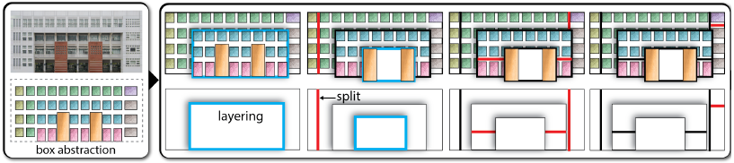

The Source Code of Facade Structure Analysis
Overview
This page maintains the source code of our hierarchical structure analysis algorithm for 2D facade image. It takes as input the box pattern of the facade elements and outputs a hierarchical decomposition tree for the facade structure. The hierarchical representation can be seen as a generative model of the input facade structure. Applications of such a representation include structure-aware facade retrieval, editing, and retargeting. See also the project page.
Downloads
Compilation (see also readme.txt included in the package)
Usage (see also readme.txt included in the package)
Citation & Feedback
If you use any part of this source code, please cite the following paper:
This page maintains the source code of our hierarchical structure analysis algorithm for 2D facade image. It takes as input the box pattern of the facade elements and outputs a hierarchical decomposition tree for the facade structure. The hierarchical representation can be seen as a generative model of the input facade structure. Applications of such a representation include structure-aware facade retrieval, editing, and retargeting. See also the project page.

Downloads
- Source code & testing data (MS VC++ 9.0 project) (symbr_code.zip, 14.5MB)
- Given a box pattern,
compute its Integral Symmetry (IS) which is a continuous measure of the
degree of symmetry
for given a discrete box pattern. - Compute the optimal
hierarchical decomposition tree for an input facade strcutre
represented as box pattern using Genetic Algorithm (GA).
Compilation (see also readme.txt included in the package)
- The code is provided as a Visual Studio C++ 9.0 project.
- You may need to install QT (later than v4.0) to compile the project.
- We utilize Matthew's Genetic Algorithms Library (GALib) for the implementation of GA.
Usage (see also readme.txt included in the package)
- Unzip the package, you will see a VC9.0 solution file and four folders. /AsymAnalysis contains the source code. /bin is where the binary is output. /input is where the test data located. /output is where the results are output.
- Put the input box pattern file under /input/tag.
- To run the program, open cmd.exe, cd to /bin/release, then type: AsymAnalysis <input.txt>
- After the running is done, you can check out the output: a data file of the hierarchy under /output/hist and a visualized hierarchy rendered as an SVG vetor graph under /output/svg.
- For the test data, the box petterns of facade elements are obtained using our Interactive Box Abstraction program (see paper for details). It is an independent program which has not been integrated into the analysis program yet. You can either choose to code up your own or ask for our program via email.
Citation & Feedback
If you use any part of this source code, please cite the following paper:
- Hao Zhang, Kai Xu, Wei Jiang, Jinjie Lin, Daniel Cohen-Or and Baoquan Chen. Layered Analysis of Irregular Facades via Symmetry Maximization. ACM Transactions on Graphics (SIGGRAPH 2013), 32(4), 104:1-10.